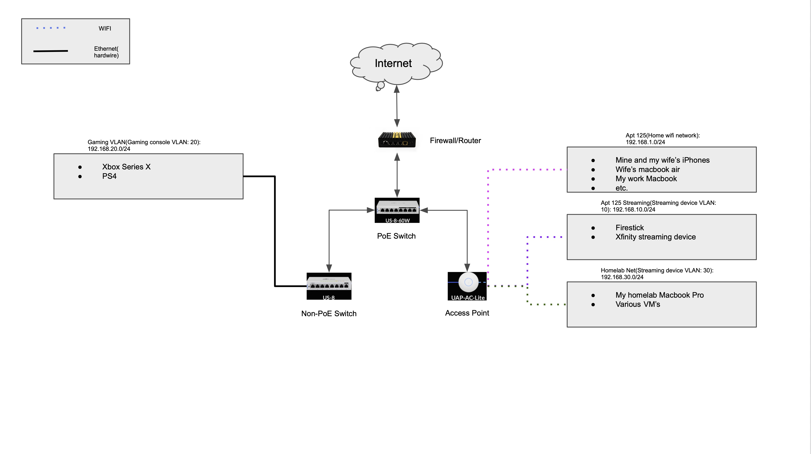
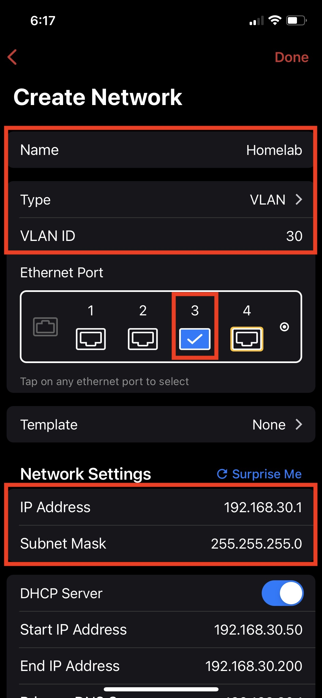
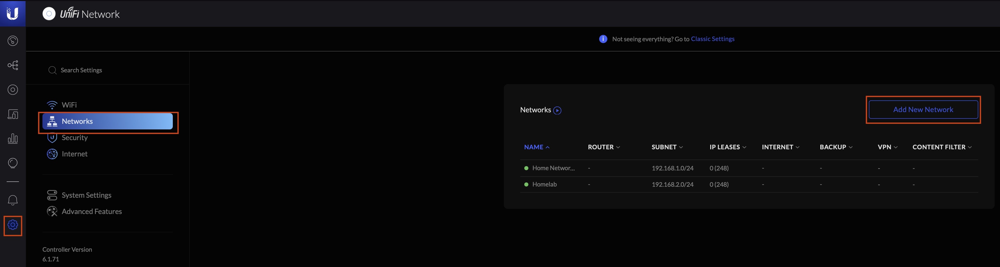
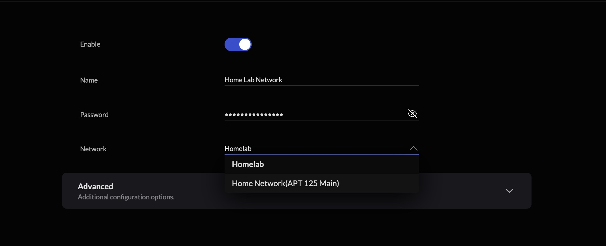
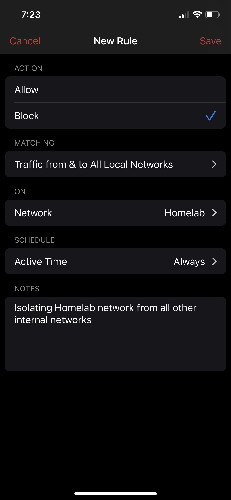

Malware Analysis Series - Part 2, How to Isolate our Homelab with Network Segmentation
Introduction:
In part one of this series, we established a solid foundation to begin our malware analysis journey. We successfully stood up two VMs; a Windows(FLARE) machine and a Linux(REMnux) machine. Put them on their own isolated virtual network without access to the internet. Lastly, we configured FLARE to use REMnux as its Gateway and DNS so that we could monitor its network communications. We tested this by setting up INetSim on REMnux and trying to connect to a “malicious” site on our FLARE VM.
In part 2, we will be looking at isolating our home lab machine from the rest of our network through network segmentation. Network segmentation is a critical component of secure network architecture. It is a way of dividing a network into various segments, usually referred as subnets, that act as their own smaller network. This offers several benefits including better control over the flow of traffic between different subnets through the use of policies which enhances security. Businesses and enterprises have used network segmentation for years but can be just as beneficial to home networks. These benefits can extend way beyond our malware analysis series as well.
Why is network segmentation important for malware analysis?
You might be thinking, “Why do I need network segmentation when I already have my VMs on an isolated VM network?”. The honest answer is you don’t. You can still use the setup we created in part 1 to analyze all kinds of malicious samples and be adequately protected from them. However, it isn’t good practice to have your home lab machine and VMs on the same network and able to communicate with the rest of your devices. There are several reasons for this:
-
You will need to get your file samples from somewhere and normally you will be grabbing samples from public repositories like VirusTotal. Doing so on a machine that shares the same network as the rest of your devices puts them at risk of infection if you accidentally detonate the file on your physical machine.
-
In some instances you might want to provide your malware sample with a live internet connection. Possibly as a way of getting a secondary file from a downloader you’re analyzing. If your home lab machine is on the same network it opens up possible routes for the malware to spread itself.
-
In extremely rare cases, malware might be able to exploit a vulnerability and ‘escape’ the VM. If this happens, the malware could infect your actual machine and possibly the rest of your network.
Before we get started:
Not all networking devices are created equal. Many home users will have all-in-one router/switch/access point combos. Netgear’s Nighthawk series is a popular example. These devices do tend to be limited in the configurability of your network. Most allow for the creation of a separate guest network that is ‘isolated’ from the regular network. If your particular device doesn’t offer VLAN or subnetting capabilities, and you don’t want to spend money on other devices, putting your home lab on your ‘guest network’ is your best option.
I’ll be doing a walkthrough using the network appliances I have below. For those that have these, should be straightforward to follow along. For those who have different appliances the concept is still the same:
- Setup a Home Lab VLAN on your router.
- Assign the VLAN to the proper ports on your router and/or switches so that it can either reach your hardwired lab or your access point so you can create a home lab wifi network.
- Configure some basic firewall rules to block traffic between your home lab and your other internal networks.
Make sure to read up on the documentation for your particular devices. They should have instructions to perform these tasks if the capablities are present.
My setup:
First and foremost, I am not affiliated with any of the devices or companies I am about to share. However, I am a fan of these products and would recommend them to those looking to do similar things.
- Firewall/Router: Firewalla Gold
- Switches: Ubiquiti US-8 Unifi Switch and UniFi Switch 8 US-8-60W 8-Port Fully Managed Gigabit Switch 802.3af PoE Ports(If you only need one, definitely go with the PoE capable switch little more pricey but totally worth it)
- Access Point: Unifi Ap-AC Lite
What my network looks like:

Setting up VLANs on my Firewalla Gold(router/firewall):
Firewalla’s iPhone app makes this part very easy. In the app, select
Network → Edit → Create Network → Local Network
Type in the name for the VLAN, I am going with Homelab . Change Type to VLAN . Then make sure to add the VLAN ID. Based off of my network diagram above, I’ll select 30 . Now make sure to check the right ethernet port on your router so that it can actually reach your internal network. Mine uses the 3rd port on my router. After that, make sure that your IP address range and subnet mask is what you want. To make things easier for myself I tend to make the third set of two bits the same number as my VLAN ID so in my case I’ll change my IP address to 192.168.30.1 and I’ll leave the subnet mask as is.

Now we can click Done at the top right and then make sure to hit Save on the Network Manager screen so that Firewalla Gold saves all the configurations you set up.
Creating Homelab Network on my Unifi Equipment:
Log into your Unifi Cloud Key or the VM that is hosting your Cloud Key software. If you have Cloud log in enabled you can do this through the cloud login portal. If not, then type in the IP address of the VM or Cloud Key and log in that way.
Once you’re logged on, click the Gear Icon at the bottom left of the navigation panel. Select Networks and Add New Network . Create the name you want for your Network . I will continue to us Homelab as the name of the network. Click the Advanced tab. Change the VLAN ID to the number you set. For me that is 30 .

This next step is very important and depends on the setup you have. My Firewalla Gold provides DHCP, so I will set mine to None . If you have a non-Unifi router that provides DHCP to your network then you will likely need to do the same. If you are using a Unifi Gateway like their USG line then I would refer you to their instructions to make sure nothing gets broken.
Click Add Network . Once on the Networks main page, you might notice a subnet range that does not match what you set up in the last section. You can ignore that, it isn’t correct and when you actually join your home lab it will have an IP assigned by your Firewalla Gold that is in the subnet of your home lab.
For my setup, I want to have a wireless home lab network. To set this up, I’ll select the WiFi tab in the same settings menu. Create the name of your wireless network. I’m keeping the same trend as before, Home Lab Network (boring I know). Create a unique password for your home lab network. Lastly, make sure to select the newly created Network that we created just before this. The network name I created is called Homelab . The last thing I like to do before clicking Add WiFi Network is click Advanced → Security → check Hide WiFi Name . I like to hide the SSID of my Home Lab network just so it doesn’t show up when people are actively looking for WiFi networks to join.

After hitting Add WiFi Network you should now see your newly created WiFi network in the list of current WiFi networks.
Configuring Firewall Rule to Block Traffic between Internal Networks:
Now that we have our newly created home lab network up and running, we should create some firewall rules to make sure we properly isolate our home lab network from the rest of our internally created networks. To do this, we need to jump back into our Firewalla Gold app.
From the app select Rules → Add Rule . For the action, I’ll select Block . In the Matching section we have two fields we need to configure. First, we need to set a target: select Local Network → All Local Networks → Traffic from & to All Local Networks . Now we need to select which device this rule will apply to. Click the Select field and select your Homelab network. The schedule I will keep always and I’ll add a quick note to the rule Isolating Homelab network from all other internal networks . Hit Save and you should now see another rule in the list specifically for your home lab.

Thats all that I need to do to create a homelab wifi network and properly isolate it from the rest of my internal networks. Firewalla Gold makes this process extremely easy and is probably different from how other devices create VLANs and firewall rules. If you run into trouble with your device, check out forums for assistance. I’ve found Reddit extremely helpful for finding help. Especially if you join that device’s specific subreddit.
Final Thoughts:
The network appliances that you have at home might be vastly different from the ones I have. You might even only have that Netgear Nighthawk router and thats ok. It is an investment to grab some of the equipment I have in this post and is something I bought over a number of months. It might not even be something that you want to invest in and thats ok too. Most of these all-in-one routers have the ‘Guest Network’ feature that can be easily turned on and sufficiently blocks the Guest Network from accessing the rest of your devices. Thats really all that is needed.
If you are someone trying to get into networking and understanding firewall rules, investing in this type of gear can be extremely beneficial for you. I myself tend to learn the best when I build things and set things up on my own vs watching videos or reading a book about it.
Hopefully you found this post helpful in some way. If you have any questions, comments or just want to chat you can find me on Twitter.
Subscribe to Open Threat Research Blog
Get the latest posts delivered right to your inbox